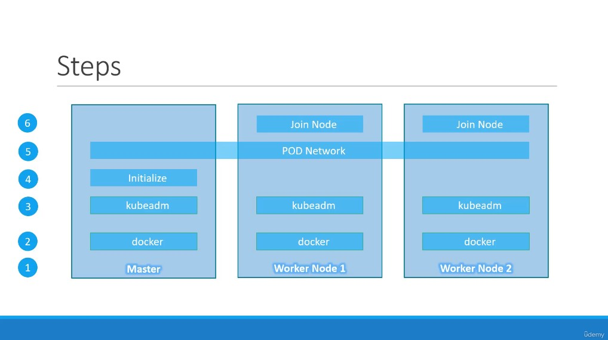
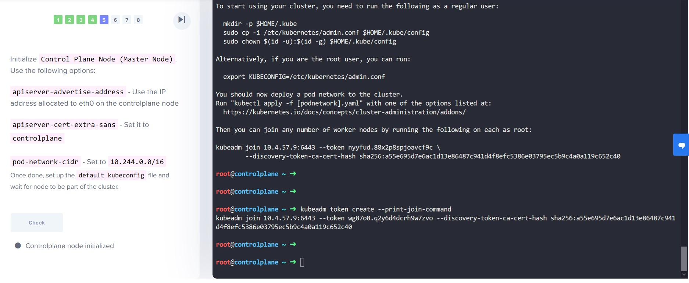
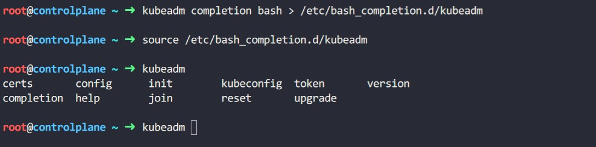
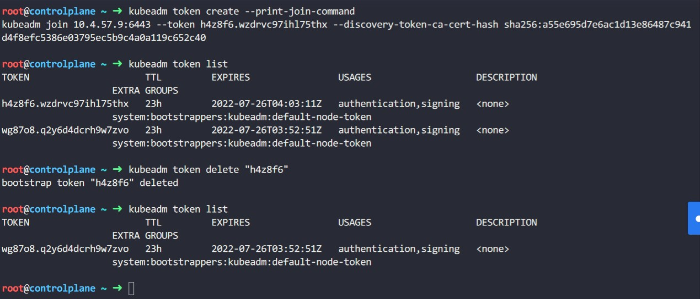

Section 11 Install K8s the kubeadm way
Contents
225. Important Update: Kubernetes the Hard Way
這個章節其實是 Section 10 的最後一個 lecture，不過我想擺在這裡應該會比較合適!
講師提供一系列 Youtube 影片來示範如何像個硬漢一樣 Install Kubernetes from Scratch 課程中所有範例可以在 mmumshad / kubernetes-the-hard-way 找到。
226. Introduction to Deployment with Kubeadm

▲ Kubernetes 官方提供 kubeadm 讓使用者搭建 multi node cluster，簡單的步驟如圖。不過自從 Kubernetes v1.24 deprecated 掉 docker 做為 container runtime 以後已經不建議使用 docker 囉!
[kubernetes.io] Installing a container runtime

230. Practice Test - Deploy a Kubernetes Cluster using Kubeadm
安裝 kubeadm 的方式請參考書籤 Installing kubeadm, kubelet and kubectl，下面會以 Debian-base distro 來當範例。 反正就是一直無腦複製貼上啦
- 更新
apt必要條件
|
|
apt-transport-https 這個套件是為了讓 apt 能夠以 HTTPS method 下載。
apt-transport-https - APT transport for downloading via the HTTP Secure protocol (HTTPS)
- 下載 Google PGP key
|
|
- 新增
aptrepositry
|
|
- 接著更新
aptrepo index、下載kubeadm所需、 將這三個套件的版本固定，避免被sudo apt upgrade/update不小心升級
|
|
Creating a cluster with kubeadm
這個子章節介紹如何使用 kubeadm 來把 cluster 跑起來~
- 如果你想讓執行
kubeadm initorkubeadm join這兩個指令時，就把一些常用的 image 抓到該 node 身上，可以參考 Running kubeadm without an Internet connection， 如果 cluster 碰不到外網就自建 Harbor 吧!
Initializing your control-plane node
- (官方建議) 如果未來 (或者現在) 有意要將這個 singal control-plane node 升級到多節點達到 HA 目的的話，
--control-plane-endpoint必須被指定。格式參考 Stacked control plane and etcd nodes
|
|
--upload-certs 代表這個 control-plane node 的 certification 之後會跟之後建立的 control-plane node 共享，詳情參考 Manual certificate distribution
Such an endpoint can be either a DNS name or an IP address of a load-balancer.
是不一定要使用 Domain name 啦… 不過自建一個 ADGuard Home 也沒多少時間嘛!
-
安裝 CNI plugins，
--pod-network-cidr設定pod使用的網段 例如:--pod-network-cidr=10.10.0.0/16。參考書籤 Installing a Pod network add-on -
(Optional) 預設
kubeadm會自動去偵測 CRI，如果安裝多個 CRI 想要指定使用的話可以加上--cri-socket常見的 CRI 路徑 Installing a container runtime -
(Optional) 預設
kube-apiserver會 LISTEN 在 default gateway via 的 NIC 上面，可以透過--apiserver-advertise-address=<ip-address>指定 bind IP， 如果使用 IPv6 就必須手動給定 EX:--apiserver-advertise-address=fd00::101。
More information
- 將 config 變成 file 傳入
kubeadm init --config參考:Using kubeadm init with a configuration file - 針對各個 control-plane components 做客制化細部設定 參考: Customizing components with the kubeadm API
- 重新設定由
kubeadm建立的 K8s cluster 參考: Reconfiguring a kubeadm cluster
完成 kubeadm init 之後
kubeadm init 會執行一系列的檢查，確保系統可以跑 K8s，沒有問題才會開始 下載/安裝 control-plane 所需的元件，一切結束後會顯示下面的訊息。
|
|
如果沒有執行下面指令讓 kubectl 有 config (或者說 context)， kubectl 就會無法使用!!
|
|

▲ kubeadm init 結束之後顯示的 join token 如果沒有記下來 (也不應該，雖然會過期)，可以使用 kubeadm token create --print-join-command 重新產生一個。

▲ 使用 kubeadm completion <shell> 產生 completion config。

▲ 使用 kubeadm token delete "xxx" 可以刪除 join token
Author 老柯
LastMod 2022-07-21